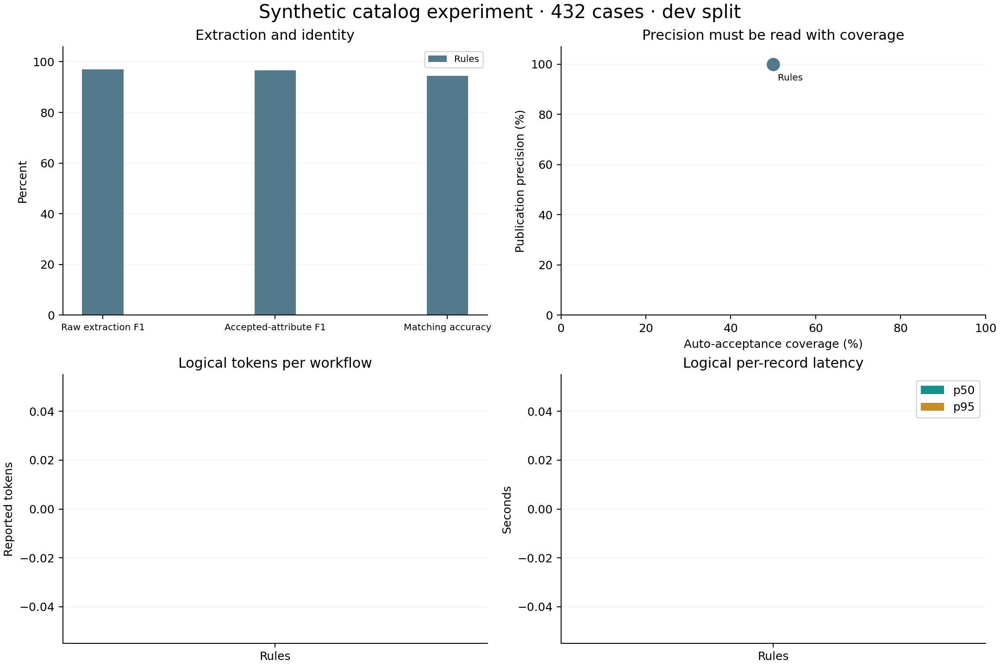

Workflow comparison
| Metric | Rules |
|---|---|
| Exact cases | 408 / 432 |
| Raw extraction F1 | 96.9% |
| Accepted-attribute precision | 100.0% |
| Accepted-attribute recall | 93.5% |
| Accepted-attribute F1 | 96.7% |
| Publication precision | 100.0% |
| Publication recall | 90.0% |
| Auto-acceptance coverage | 50.0% |
| Matching accuracy | 94.4% |
| Evidence-link coverage | 100.0% |
| Localization invariants | 100.0% |
| Unsafe publications | 0 |
| Unsupported accepted facts | 0 |
| False same-product decisions | 0 |
| Logical API requests | 0 |
| Logical reported tokens | 0 |
| Latency p50 / p95 (s) | 0.00 / 0.00 |
Physical total: 0 API requests · 0 reported tokens · 0 request errors · 26.89s. Both NIM arms share their first response; their logical costs each include it.

Where each workflow succeeds and fails
Language breakdown
| Language | Rules |
|---|---|
| ar | 102 / 108 |
| de | 102 / 108 |
| en | 102 / 108 |
| es | 102 / 108 |
Market breakdown
| Market | Rules |
|---|---|
| ar-SA | 90 / 96 |
| de-DE | 90 / 96 |
| en-US | 90 / 96 |
| es-ES | 90 / 96 |
| es-MX | 48 / 48 |
Scenario breakdown
| Scenario | Rules |
|---|---|
| active_conflict | 24 / 24 |
| ambiguous_voltage | 24 / 24 |
| clean | 24 / 24 |
| different_product | 24 / 24 |
| identity_collision | 24 / 24 |
| json_record | 24 / 24 |
| markdown_table | 24 / 24 |
| market_certificate | 24 / 24 |
| market_missing_certificate | 24 / 24 |
| missing_power | 24 / 24 |
| narrative | 0 / 24 |
| prompt_injection | 24 / 24 |
| related_variant | 24 / 24 |
| shuffled_synonyms | 24 / 24 |
| superseded_revision | 24 / 24 |
| unauthorized | 24 / 24 |
| unit_conversion | 24 / 24 |
| withdrawn | 24 / 24 |
Format breakdown
| Format | Rules |
|---|---|
| clean | 336 / 336 |
| json_record | 24 / 24 |
| markdown_table | 24 / 24 |
| narrative | 0 / 24 |
| shuffled_synonyms | 24 / 24 |
Fault-injection control
1248 corrupted proposals. 0 unsafe acceptances with the evidence gate. The simulated unchecked comparator accepts 1248.
A controlled intervention, not an estimate of model hallucination. No unchecked output is published.
How to interpret these results
Read correctness together with coverage. A system that rejects difficult records may preserve precision while missing useful facts. Narrative descriptions deliberately remain in the benchmark, exposing the current verifier's coverage limit.
Synthetic templates; group-disjoint splits; no real-world accuracy claim. Controlled market rendering does not measure translation quality. HTTP failures remain in the results. Few-group bootstrap intervals are descriptive only.